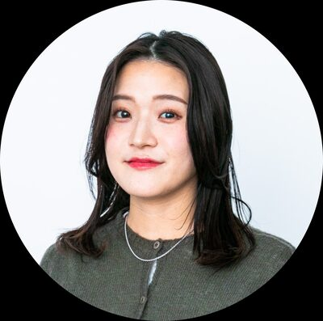
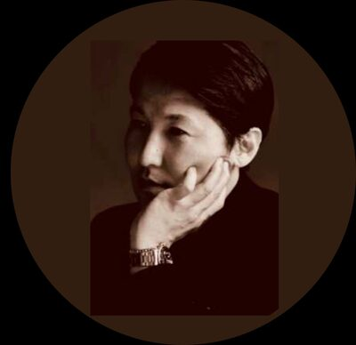

「善意」を、世界を動かす原動力へ。
ソーシャルグッドな思いやりを、誰もが前向きに続けられるように。
Vision バトンを繋ぐ度、未来に潤いが広がる。
「巡る素材」と「刻まれる記録」が組み合わさることで、これまで見過ごされてきた環境貢献がデジタル資産や信頼という実質的な価値に変換されます。作り手、使い手、そして次世代の全員が、アクションを起こすたびに恩恵を受け取るWin-Win-Winな好循環を実現します。
江戸時代の都市「江戸」は、世界最大の循環型都市でした。排泄物は肥料に、着物は何度も仕立て直され、修繕・再利用が当たり前の社会が成立していました。
新しい技術で、現代の「東京」を再び世界最大の循環都市にしたい。それが私たちの出発点です。
人口100万人超の江戸は、衣食住すべてを循環させた世界最高水準の都市。修繕・再利用・たい肥化が社会インフラとして機能。
年間78.7万トンの衣類廃棄、埋立地の逼迫。「廃棄が最も安価」な経済構造が循環を阻んでいる。
Green Material TechnologyとMusubi by +Tagで廃棄衣類を資源に変え、都市全体を「都市鉱山」へ。東京発の資源循環モデルを世界へ。
大学時代、ファッションが環境と人道の犠牲の上に成り立つ現状に衝撃を受けたことが私の原点です。
この根本原因は「個人や企業単体の善意の問題」ではなく「社会や経済の仕組み」であると至り、ここへアプローチするため起業しました。
私たちは衣類を単なる「消費財」ではなく、次の誰かや未来の資材へと繋ぐ「バトン」と定義しています。バトンを繋ぐ度に、未来に潤いが広がっていく——そんな社会を、テクノロジーで実現します。
未来を実装する、
ビジネス × サイエンス × テックの三位一体チーム。

アマゾンと大手メーカーで培ったマーケティング・ビジネスデザイン経験。ユーザー視点を取り入れたビジネスモデルを構築。
未利用バイオマス研究の世界的権威（博士号、JST Project Leader）。素材開発の技術的実現性の根幹を担う。

SX、Blockchain、ESPR対応の専門家。トレーサビリティサービスのビジネスオーナーとして、テック観点から事業構築・実装を推進。